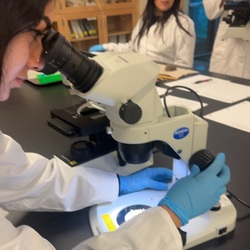
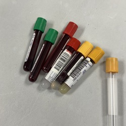
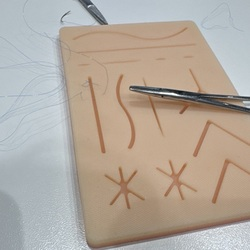
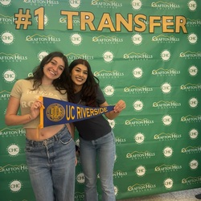

Enter bio here
Enter bio here
I am a dedicated Health Sciences student with a strong interest in patient care, healthcare education, and professional growth. My background includes experience in phlebotomy, veterinary clinics, and various other healthcare environments. Through these experiences, I have developed valuable skills in patient communication, teamwork, attention to detail, and providing compassionate care.
Working as an inpatient phlebotomist, I have gained hands-on experience working with patients and supporting my team within the hospital, delivering quality care throughout. My schooling has also strengthened and supported my career in all clinical settings.
My educational background includes earning an Associate of Science degree, completing a certified phlebotomy technician program, and continuous schooling to obtain a bachelor's degree in biology. Each of these experiences has helped me develop a broader understanding of healthcare and the different roles involved in patient treatment. Balancing school, work, and personal responsibilities has also taught me the importance of time management, dedication, and perseverance.
Professionally, I have gained valuable hands-on experience working as a phlebotomist at my local hospital. In this role I have had the opportunity to interact with patients, assist doctors and nurses with procedures and tests, maintain organized clinical environments, and help patients feel comfortable throughout the procedure. Working in a hospital setting has strengthened my communication skills, attention to detail, and ability to remain calm in busy situations. It has also shown me how important patience, empathy, and teamwork are when providing healthcare services.
In addition to my phlebotomy experience, I also spent 2 years working at Chipotle Mexican Grill. This was my first job and it exposed me to what it means to be a hard working team player. I moved up to be a trainer in my time there, teaching me how to manage and supervise others. I would introduce them to the company and make them understand our policies and execute them well. This definitely improved my communication skills and customer service.
Outside of academics and work, I value spending time with family and friends, exploring new interests, and finding opportunities to be creative. I believe maintaining a balance between my personal life and professional responsibilities is important for long term success. I also enjoy setting goals for myself and working toward them, even when the process becomes challenging. I consider myself hardworking, compassionate, adaptable, and always willing to learn from others.
Looking toward the future, my goal is to continue advancing my education and eventually pursue a career as a Physician Assistant. I hope to combine my clinical experience, academic knowledge, and passion for helping others to provide compassionate, patient-centered care. I understand that reaching this goal will require continued dedication, but I am excited about the opportunities ahead. Ultimately, I want to build a meaningful career where I can continue learning, support my community, and positively impact the lives of the patients I serve.
Enter bio here
• Trained new employees on customer service, restaurant procedures, and workplace expectations
• Assisted with daily operations in a fast-paced environment
• Maintained food safety and cleanliness standards
• Performed venipuncture in an inpatient and outpatient setting
• Maintained sanitary conditions through every procedure prioritizing accuracy.
• Ran the cash register system and handled cash from customers
• Maintained customer service, mitigating customer problems.
• Made sandwiches and maintained food safety



